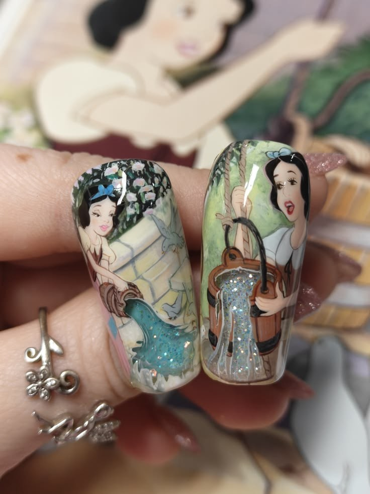
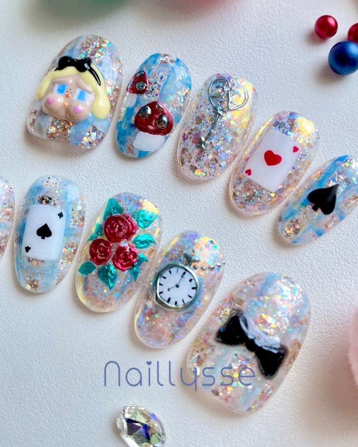
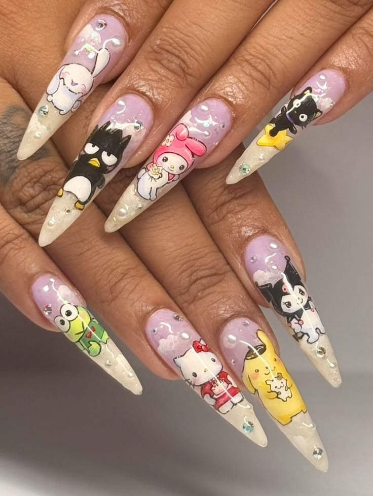

Halo! Saya Isa Andrea. Di Chewy's Academy, saya fokus mengajar teknik Custom Character dan Watercolor Painting. Bagi saya, kuku bukan hanya sekadar hiasan, tapi galeri seni mini tempat kita bisa melukis karakter apa pun dengan detail yang hidup.
Isa telah berkecimpung di dunia nail art selama lebih dari 6 tahun. Ia dikenal karena ketelitiannya dalam membuat desain karakter yang sangat mirip dengan aslinya, mulai dari tokoh kartun hingga gaya lukisan cat air yang estetik. Isa percaya bahwa siapa pun bisa melukis di kuku asalkan tahu teknik dasar perpaduan warna dan penggunaan kuas yang tepat.


